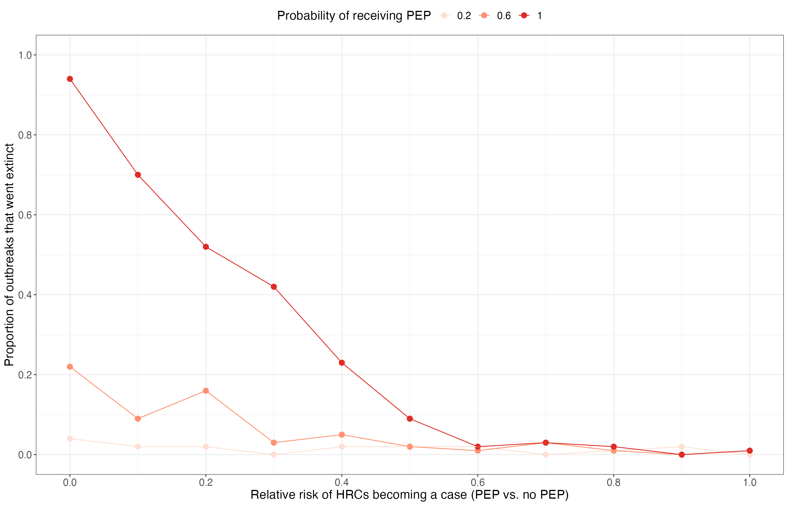

Example application: the effect of post-exposure prophylaxis for high-risk contacts on outbreak control
Sophie Meakin
example-application.RmdIn this example we use pepbp to quantify the impact of PEP on outbreak control. Specifically, we consider how the probability of receiving PEP and the effectiveness of PEP affect the size of outbreaks, the average number of secondary cases (R0), and the number of PEP doses required.
Model
First, we define a grid of scenarios for the parameters of interest:
- Probability that a high-risk contact receives PEP = {0.2, 0.6, 1};
- Effectiveness of PEP (relative risk of becoming a case) = {0, 0.1, 0.2, …, 0.9, 1}.
All other parameters are fixed. The mean number of high-risk contacts is 2 and the probability that each high-risk contact becomes a case (without PEP) is 0.75. The mean number of low-risk contacts is 5 and the probability that each low-risk contact becomes a case is 0.1.
scenario_grid <- expand_grid(
# Varying parameters
prop_pep = seq(0.2, 1, 0.4),
rel_risk = seq(0, 1, 0.1),
# Fixed parameters
n_initialcases = 5,
hrc_mu = 2,
hrc_disp = 1,
lrc_mu = 5,
lrc_disp = 10,
p_hrc_case = 0.75,
p_lrc_case = 0.1
) %>%
mutate(scenario = 1:n()) %>%
select(scenario, everything())Now run the 100 iterations of the branching process model for each scenario, and summarise the results:
res <- parameter_sweep(
scenarios = scenario_grid,
n_sim = 100,
sim_fn = partial(scenario_sim, cap_max_gen = 5, cap_max_cases = 2500)
)
res_summary <- summarise_results(res) %>%
group_by(scenario) %>%
mutate(big50 = sum(outbreak_size > 50)/n()) %>%
right_join(scenario_grid, by = "scenario") %>%
ungroup()Results
Effect of PEP on preventing large outbreaks
res_summary %>%
filter(prop_pep > 0) %>%
select(scenario, prop_pep, rel_risk, big50) %>%
distinct() %>%
ggplot(aes(x = rel_risk, y = big50, col = as.factor(prop_pep))) +
geom_point(size = 3) +
geom_line() +
scale_x_continuous(breaks = seq(0, 1, 0.2)) +
scale_y_continuous(breaks = seq(0, 1, 0.2)) +
scale_color_brewer(palette = "Reds") +
labs(
x = "Relative risk of HRCs becoming a case (PEP vs. no PEP)", y = "Proportion of outbreaks with at least 50 cases",
col = "Probability of receiving PEP"
) +
theme_bw() +
theme(text = element_text(size = 16), legend.position = "top")
Number of PEP doses required
res_summary %>%
filter(prop_pep > 0) %>%
group_by(scenario, n_initialcases, prop_pep, rel_risk) %>%
summarise(
npep_mean = mean(n_pep),
npep_median = median(n_pep),
npep_q025 = quantile(n_pep, 0.025),
npep_q25 = quantile(n_pep, 0.25),
npep_q75 = quantile(n_pep, 0.75),
npep_q975 = quantile(n_pep, 0.975),
.groups = "drop"
) %>%
ggplot(aes(x = rel_risk, col = as.factor(prop_pep))) +
geom_ribbon(aes(ymin = npep_q25, ymax = npep_q75, fill = as.factor(prop_pep)), col = NA, alpha = 0.4) +
geom_point(aes(y = npep_mean), size = 3) +
geom_line(aes(y = npep_mean)) +
scale_x_continuous(breaks = seq(0, 1, 0.2)) +
scale_y_continuous(limits = c(0, NA)) +
scale_color_brewer(palette = "Reds") +
scale_fill_brewer(palette = "Reds") +
labs(
x = "Relative risk of becoming a case", y = "Number of PEP doses",
col = "Probability of receiving PEP", fill = "Probability of receiving PEP"
) +
theme_bw() +
theme(text = element_text(size = 16), legend.position = "top")